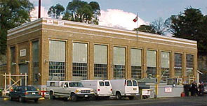
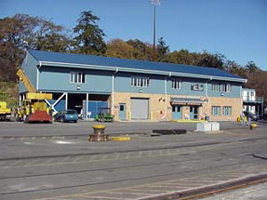
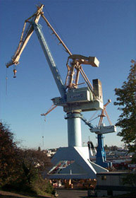

We are a dynamic full service drydock supporting national and international clientele 24 hours a day, seven days a week and 365 days a year.
The pumphouse staff is responsible for the fill and drain of the dock basin, electrical supply, compressed air, sewage and fresh water. For further information contact the pumphouse supervisor at 250-363-3768 or the pumphouse floor at 250-363-3788.
For up to date electrical services please contact the electrical supervisor at 250-363-3991.
The yard staff provides a variety of services including keel block setting, assisting with the docking and undocking of vessels, maintaining the grounds and oil spill response.
Our clients are serviced by three heavy-lift electrically-driven, rail-mounted travelling cranes as well as a 7 tonne Tower Crane on the South Jetty, and 3 mobile cranes.
Cranes at EGD:
Krupp 150 tonne Level Luffing Crane (1982) - 150-tonne capacity at 35 metres and a 100-tonne capacity at 50 metres. This crane has a main hook capable of lifting entire vessels onto land for refit or repair and an auxiliary hook with a 15 tonne capacity generally used to transport materials onto the vessel. This crane is situated on the North side of the Dock and is a valuable crane to serve our Clients needs for vessels berthed at the North Landing Wharf.
Ebco 30 tonne Level Luffing Crane (1984) - This quick maneuvering crane travels the full length of the Dock and has a 30-tonne capacity at 35 metres.
Konecrane 30 tonne, Level Luffing Crane (2010) - The newest of our rail mounted cranes has a reach of 42 metres. This crane travels the full length of the south side of the graving dock.
Pecco 7 tonne Tower Crane is situated on the South Jetty of EGD and can service vessels berthed at the South Jetty.
In addition, the Esquimalt Graving Dock has three mobile cranes: A 30-tonne Grove RT rubber tired crane, a 25-tonne rubber tired mobile crane and a 10-tonne Hyster Bullmoose that is ideal for dockbottom applications.
We also have 4 tonne and 6 tonne forklifts available to our clients.
The Risk Management Group addresses issues concerning safety, fire, security and public relations. They also ensure that EGD maintains its Marine Facility Certification under the requirements of the Marine Transportation Security Regulations and International Ship & Port Facility Security Code. This group works and coordinates mostly behind the scenes to help ensure that not only do EGD employees work in a safe and secure environment, but also employees of the companies that operate out of the EGD facility.